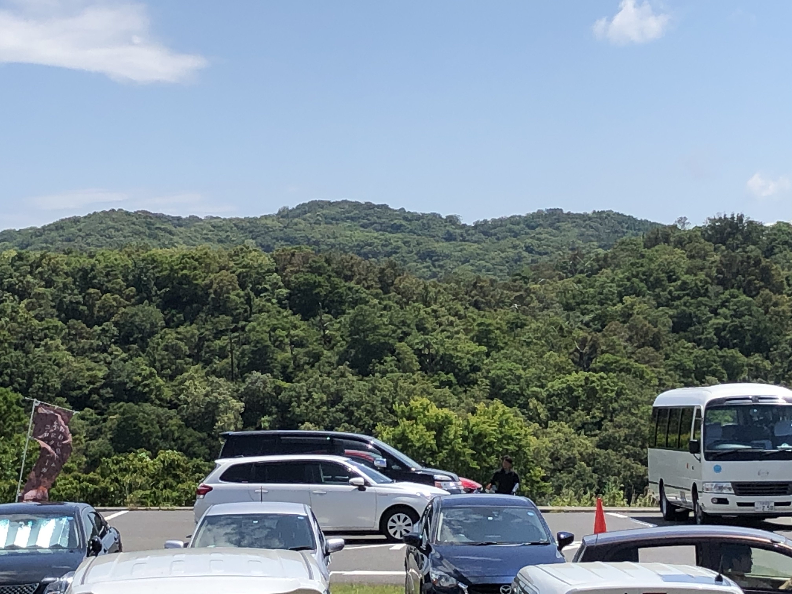
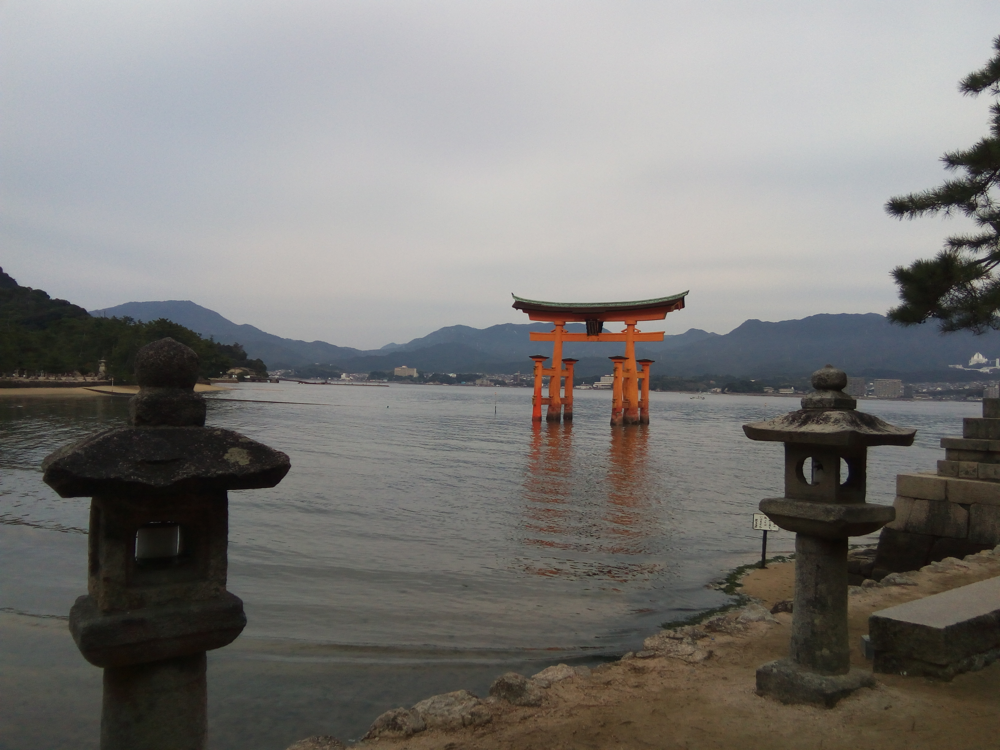
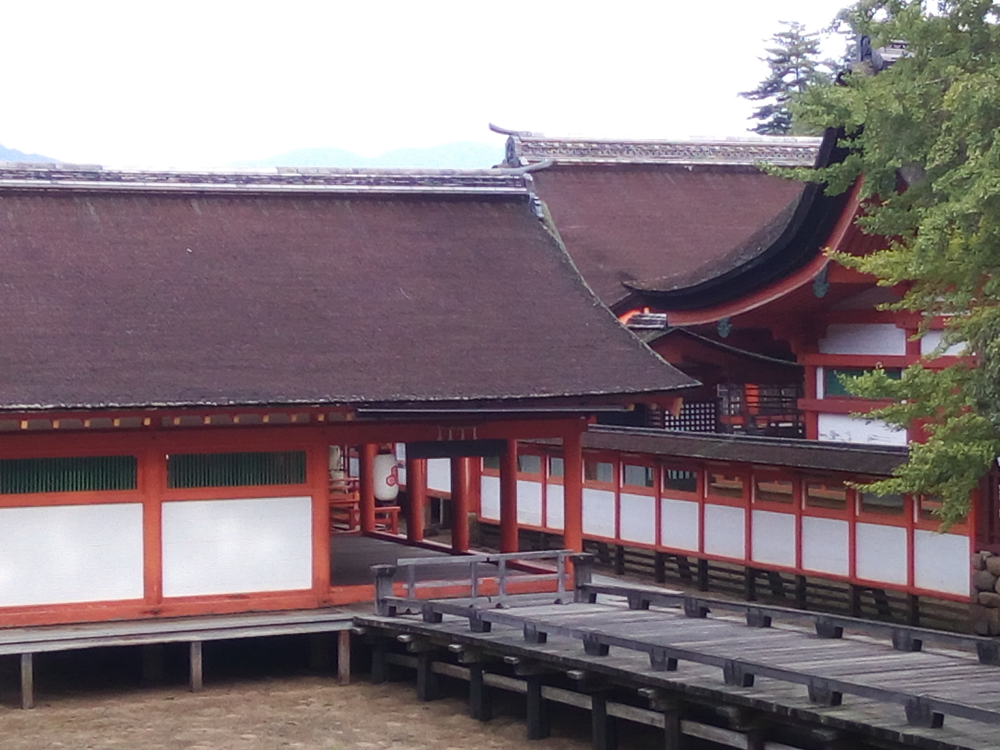

夏休み限定! 引きこもり! 高専生のフォトコラム

「 屏風 」
この写真は新潟県へ旅行に行き、その帰りに立ち寄った岐阜県 白川郷 での一枚。
普段、周りが自然に支配されることがほとんどない自分にとって”キレイに並んだ高い木”それだけで
圧倒された。結果シャッターを押したに違いない。
木々の間を端から首を横に振るように注目してほしい。
そこからは屏風のようなストーリー性、
空と山が押し合って勝負しているようにも見え魅力があると感じた。

「 その奥 」
淡路島へ行ったときの一枚
よく見ると山の中腹で色が変わっていて、山が二つあることがわかる。
手前からアスファルトの上に車があり、山があり
よく見るとその奥にも山がある。そしてその奥は・・・とその先が気になってくる。
高速道路なのか、山なのか。想像力が掻き立てられた。

「 じれったい 」
広島にある厳島神社の鳥居の写真。
水に映っていたと思われる鳥居が波によりかき消される。
手前には二つの灯篭が門のようにも見えるが斜めを向いている。
空を見上げると今にも泣き出しそうな雲。青一つない。
あと波さえ立たなければ、少し傾けば、青空さえみえれば。
どこかもどかしい。

「 行列 」
広島、厳島神社内での一枚
どの部分を見てもはっきりと色の違いがありスッキリしている
また、世界遺産として世界に荷も認められた神社の一部。
にもかかわらず初めに受けた印象は
ごちゃごちゃしていて混みあっている と感じた。
例えるなら、キレイに並んでいるにも関わらず混みあっている”行列”のよう。